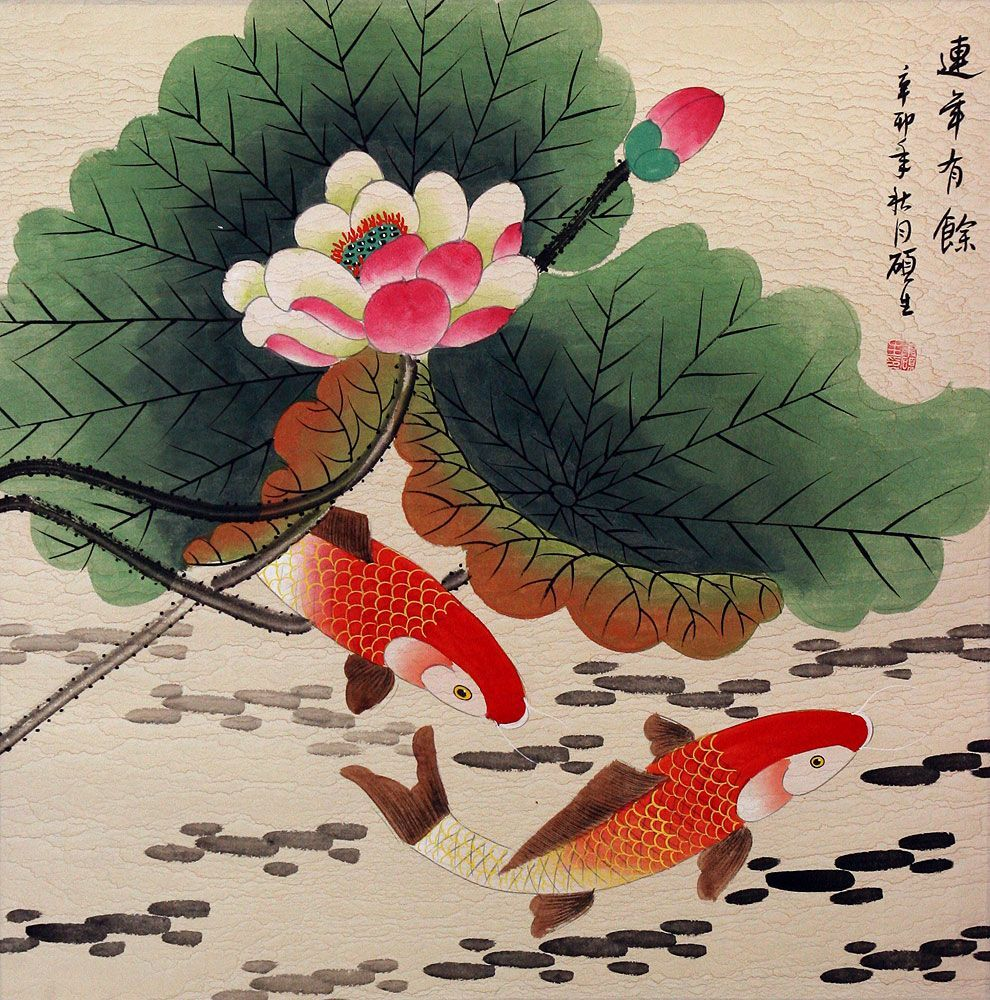

ABOUT KOI FISH
The most common meaning of koi fish tattoos is perseverance. They are often used to symbolize the struggles one has overcome or is overcoming in their own life. Other meanings can be added based on the colours and styles of the tattoo.
Koi fish are renowned symbols in Japanese and Chinese culture. One popular traditional Japanese tattoo motif is the form of koi carp. They are said to own several masculine qualities such as strength and bravery.
The koi carp in China were known to attempt swimming upstream in the yellow river, but only a few of them were able to swim past a point called the Dragon's Gate.
Legend has it that the koi who did were rewarded by turning into dragons. For this reason, koi carp are also a symbol of determination and a strong will to succeed.

KOI COLOR MEANING
The color of a koi tattoo can change it’s meaning. Traditionally, however, these colors have their own meanings.
The black koi is associated with successfully overcoming an obstacle and symbol of masculinity in Japan represents the father. It often recognizes a successful battle through struggle in one’s life.
A white koi is a symbol of success in one’s career. It may also represent the son of a household.
The blue koi fish is often associated with masculinity and fertility. a symbol for the son of a family, the blue koi also meaning peace, serenity, and calmness.
The colors Gold yellow or orange. The legendary koi transforms into a golden dragon. This color choice represents wealth, prosperity, and fortune. The legend Japanese , the yellow and golden koi are symbols of wealth and prosperity.
In Japan, the red koi symbolizes the female figure in the family. As a tattoo design, it represents passionate love.
A red koi have some of different meanings. It may be a symbol of intense love, motherhood, power, strength, or bravery.
The pink koi represents the daughter as well as femininity.

JAPANESE TATTOO HISTORY
Before World War II, Japanese tattoos were used to depict social status as well as spiritual devotion. They were also used as a form of a charm for protection and spirituality. However, Japanese tattoos were also used as a form of punishment for criminals and slaves, which also directly referred to the social status of those social groups
FYI! Koi Tattoos are free for everybody everywhere!
Don't forget to subscribe!